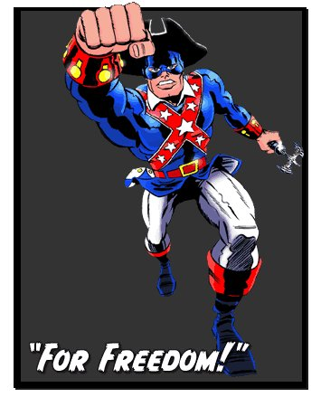

<!DOCTYPE html>
<html>
    <title>MINUTEMAN</title>
</html>
<header>
    Freedom Force
</header>
<hr>
<body style="background-color: aquamarine;">
    <h4>Those Reds may have gotten Frank Stiles, but they are about to meet...</h4>

    <h1 style="color: red; font-size: 60px">The MINUTEMAN</h1>
    <table style="width: 50%;">
        <caption>
            
        </caption>
        <tr>
            <td>Hero Name</td>
            <td>&nbsp;</td>
            <td><ul style="list-style-type: none; color: red;">
                <li><span style="font-size: 40px;">Minuteman</span></li>
            </ul>
            </td>
        </tr>
        <tr>
            <td>Real Name</td>
            <td>&nbsp;</td>
            <td><ul style="list-style-type: none;">
                <li>Frank Stiles</li>
            </ul>
            </td>
        </tr>
        <tr>
            <td>Debut Date</td>
            <td>&nbsp;</td>
            <td><ul style="list-style-type: none;">
                <li>2002</li>
            </ul>
            </td>
        </tr>
        <tr>
            <td>Superpower</td>
            <td>&nbsp;</td>
            <td><ul style="list-style-type: none; color: green">
                    <li>Highly-enhanced physical capabilities</li>
                    <li>Physical attribute empowerment</li>
                    <li>Ally morale boost</li>
                    <li>Calm head and disciplined</li>
                    <li>Heroic</li>
                    <li>Energy control</li>
                </ul>
            </td>
        </tr>
    </table>
    <h2 style="color: blue">FOR FREEDOM! FOR JUSTICE!</h2>
    <p>
        Minuteman is a patriotic hero. Originally an old nuclear researcher named Frank Stiles who was betrayed by his past colleague, he gained his powers from a statue of patriotic warrior that was hit by an alien energy called <strong>Energy X</strong>.
        <br>The energy transferred into his aging body, bringing it back to its youthful form, along with enhanced physical capabilities. Donning a costume to protect his identity, Minuteman protects the city's day-to-day life with his trusty weapon Patriot.
    </p>
</body>
<hr>
<footer>
    Freedom Force
</footer>